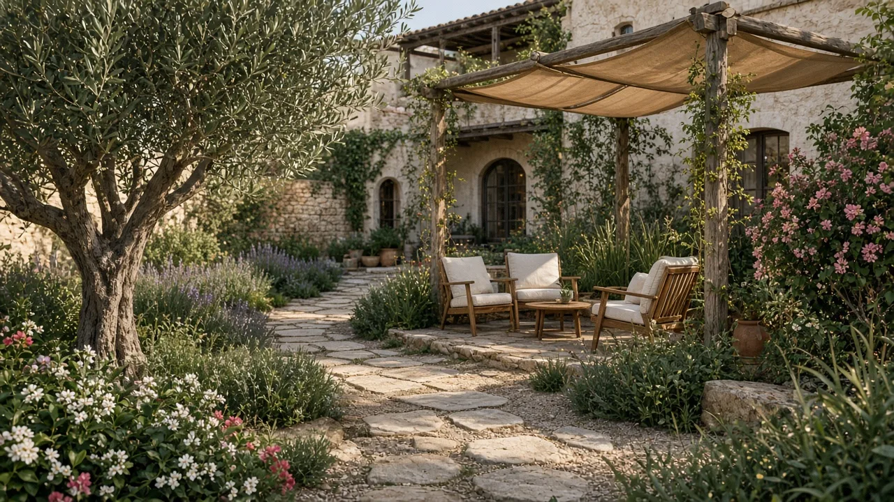
Profile A
Boutique and romance
Small, well designed houses. A garden, a festive hall, a quiet courtyard. Good for couples and for a small wedding.
The gathering place
Long tables, warm light and people you did not know yesterday.
Houses and places
Small retreats, hotels and community offers from our research. Filter by country, type and price and open each offer for details.
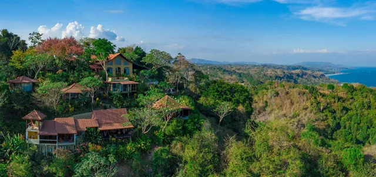
Above Montezuma, southern Nicoya Peninsula
Retreat center in the jungle with a view of the sea. Organic food, saltwater pool, spa and daily yoga.
See details ›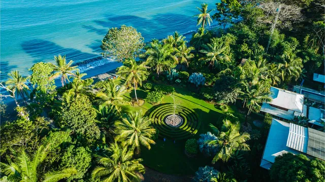
Playa Tamales, Puerto Jiménez, Osa Peninsula
Right on the beach of the Osa Peninsula. 13 rooms for up to 36 guests, food from its own farm.
See details ›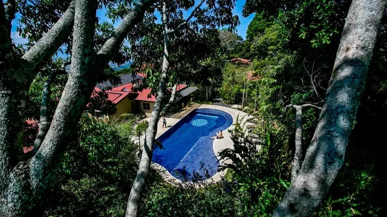
Pavas, Carrizal, Alajuela
High above the Central Valley, about 25 minutes from San José airport. Three meals a day in the nightly rate.
See details ›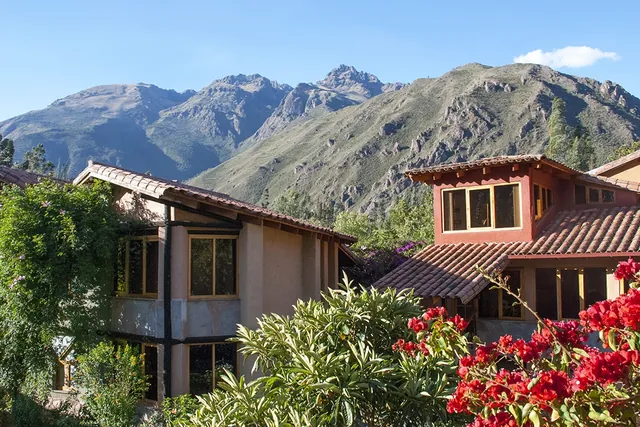
Sacred Valley, near Urubamba
A house run since 1994 between Cusco and Machu Picchu. 35 rooms, vegetarian food from its own gardens.
See details ›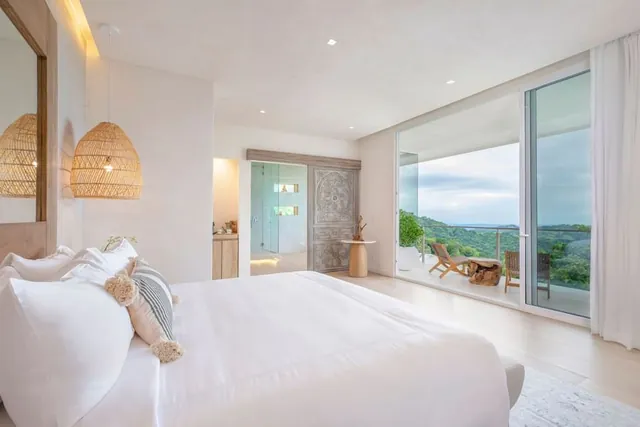
Barrio Jesús, Atenas, Alajuela
Wellness hotel with 25 rooms and a view to the Pacific. Three meals and yoga twice a day included.
See details ›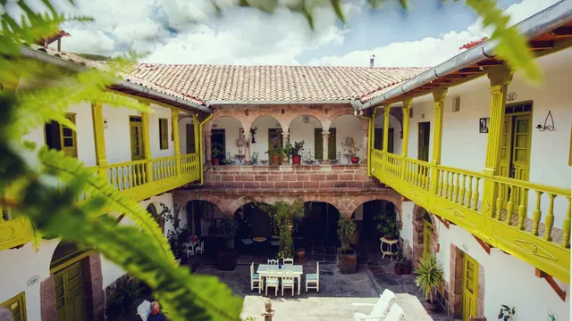
Cusco, Calle Meloc 148 and Calle Fierro 476
Two townhouses in Cusco with a restaurant and a shop. According to the house, every stay supports a foundation.
See details ›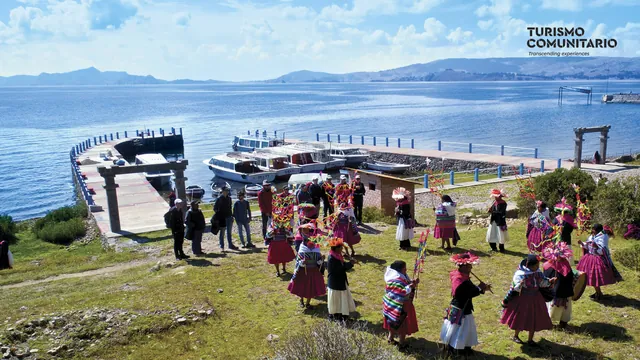
Amantaní Island, Lake Titicaca, Puno region
Community tourism on one of the largest islands in Lake Titicaca. Two days and one night are recommended.
See details ›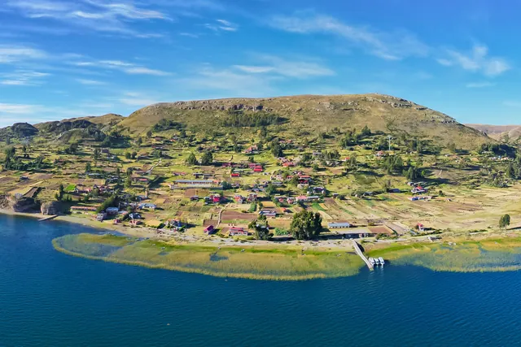
Luquina Chico, Chucuito, Puno
Community tourism on Lake Titicaca, 22 kilometers from Puno. Rooms with private bathroom and three meals.
See details ›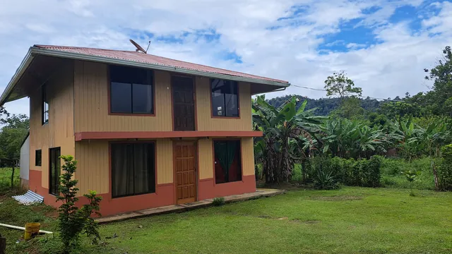
In the interior of the Osa Peninsula
Rural community tourism by the local community (ADIRQ). Rustic cabins and family run lodgings.
See details ›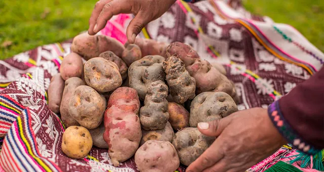
Pisac, Cusco region
Community offer around traditional farming and native potato varieties. A full day is recommended.
See details ›No offer matches this filter.
A selection, not a partnership. The houses are not partners of Gatherwynd. Nothing can be booked here. All details come from the official websites of the houses (as of 15 November 2026).
Photos from the official websites of the houses or from Peru Travel (PromPerú). Credits are shown with each image.
For houses
Gatherwynd is not a booking portal. Nils comes to your house, films on site, talks with your guests and shows the place and the people behind it. No gloss and no big words.
Boutique hotels, small guesthouses and homestays. Refined, carefully run houses that are easy to overlook. Only a few houses per region, so each one has a place of its own.
All-inclusive resorts and chain hotels. They market themselves. Gatherwynd stays with the small houses.

Small, well designed houses. A garden, a festive hall, a quiet courtyard. Good for couples and for a small wedding.
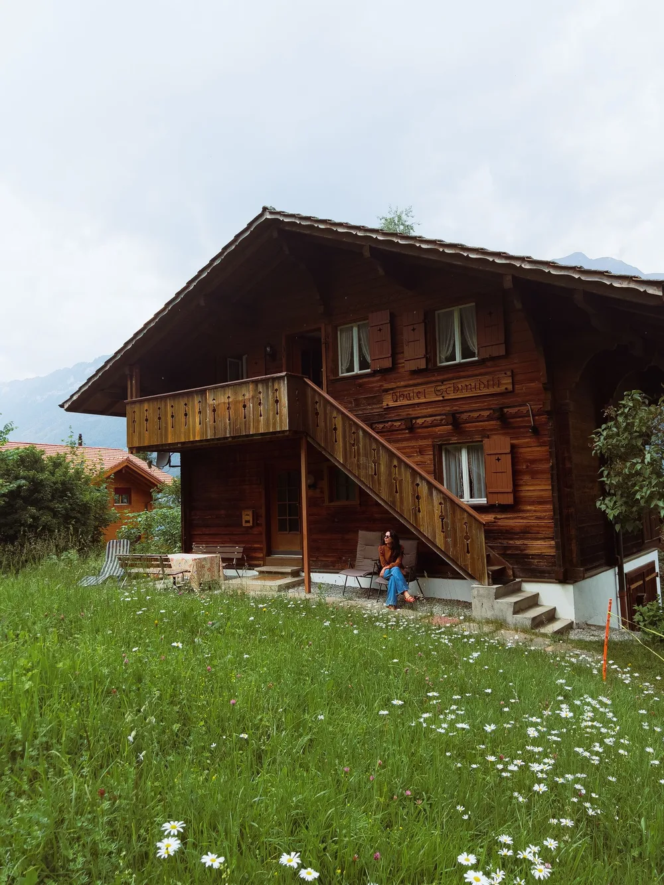
Photo · D. TrindadeApartments or bungalows, space to cook and play, grounds that are easy to keep an eye on. Houses where a family can settle in.
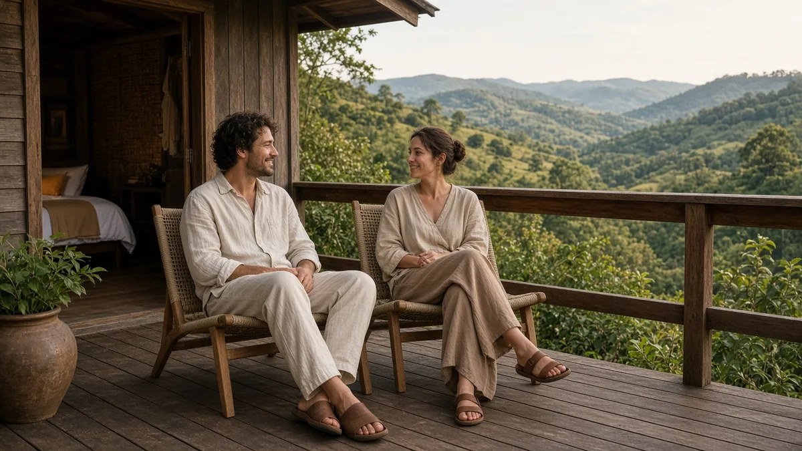
Secluded, quiet, with a view and privacy. A house for two who want a few days truly to themselves.
Sample images, edited with AI. The middle photo is a stock photo by Denner Trindade, Pexels.
Latin America, Spain, Portugal, Québec and elsewhere in Europe. From December Nils is on the road, including in Peru.
Tell us about your houseFor guests
Set retreats with a clear program, or time away that we arrange with you at an easy pace. You decide. And if you like, you spend the time with Nils in a house you have in mind.

Set programs, set dates and clear prices. Choose what suits you and book without a long back and forth.
Or write to us first about what you are looking for.
Ask about a retreat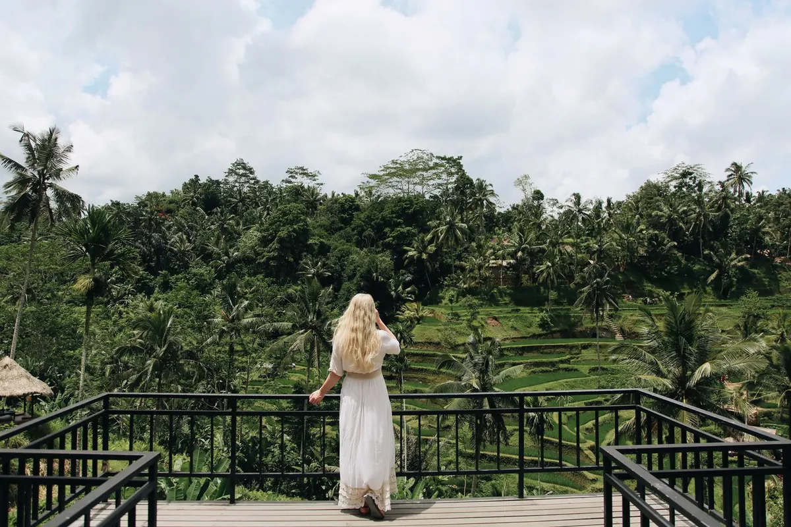
Photo · alleksana / PexelsYour dates, your pace, the company you would like. We put it together with you, personally and discreetly.
A personal request, not a fixed program.
Plan your time awaySample images, edited with AI. The right photo is a stock photo by alleksana, Pexels.
Or time with Nils in a house you have in mind.
Tell us where you would like to go. We will look together at whether it fits.
Small retreat centers and houses that offer yoga, fasting, time away and quiet. Described plainly. No gloss and no big words.
Look at places and programs at your own pace. Nils wants to go there himself and show you what it looks like.
Write us a few lines: do you run a house or are you looking for time away? We will see together whether it fits. If not, that is fine too.
We get back to you with all the details on booking and payment. Personally and without hurry.
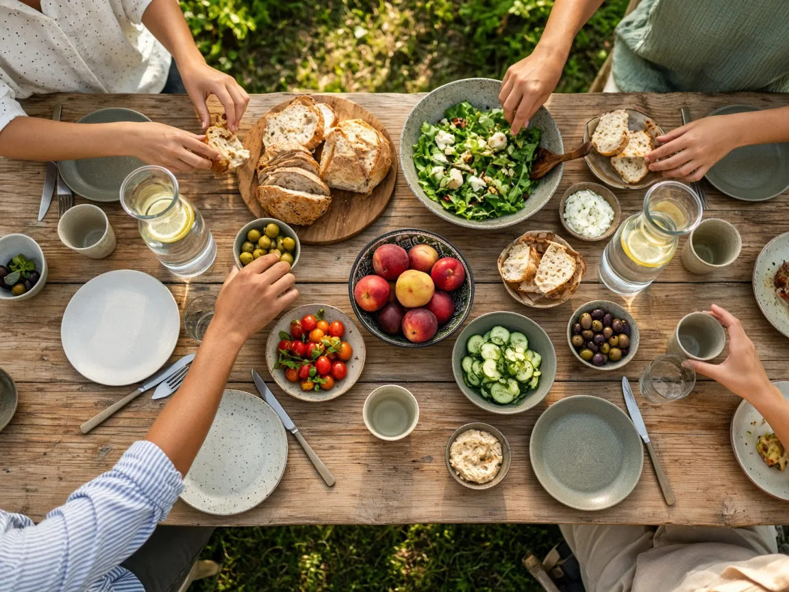
 Photo · J. Wolfert / Pexels
Photo · J. Wolfert / Pexels
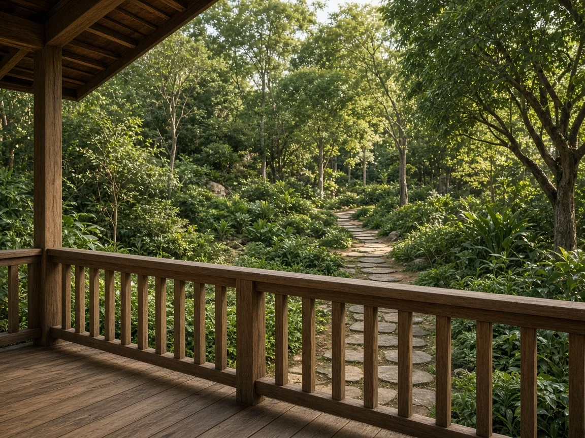
Sample images, edited with AI.
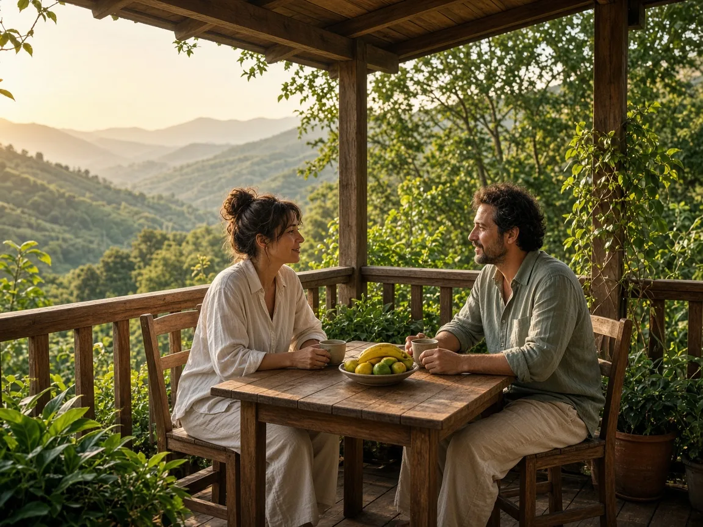
Small centers, open terraces and rooms looking out into the green. No noise, no show. People who take their time.
Hotels, retreat centers and eco lodges that feel like being at home with friends. Nils shows you what they are really like.
Sample images, edited with AI.
Eco lodges, hotel gardens, rooms with a view and houses in the green. Symbolic images until Nils films on site.

Small houses, a garden path, a view of the mountains.
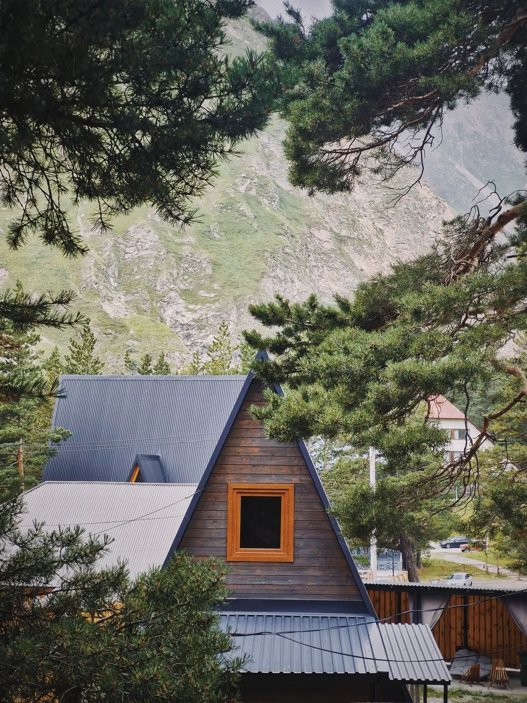
Photo · Dmitry A.Wood, quiet and a roof under the trees.
 Photo · hi room / Pexels
Photo · hi room / Pexels
A long table in the shade and lanterns for the evening.

Linen bed, wood and green outside the window.
 Photo · Pew Nguyen / Pexels
Photo · Pew Nguyen / Pexels
Wood, a small terrace and leaves up to the roof.
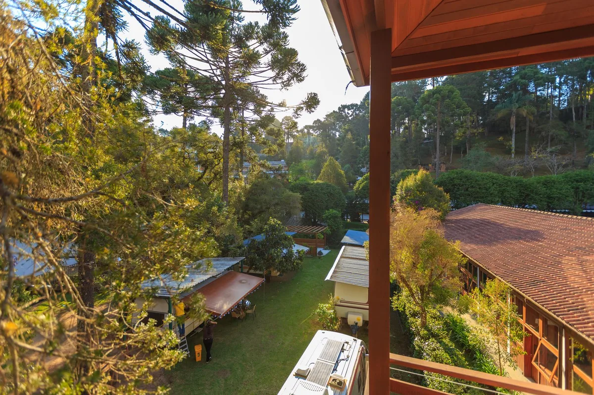
Photo · M. BertelliA wooden shelter and green as far as the horizon.
Sample images, edited with AI. Photos with a credit are stock photos from Pexels, not the real Gatherwynd places.
Your host
Gatherwynd
Gather means to gather, to come together. Wynd is an old Scottish word for a narrow path.
 Nils · Host
Nils · Host
“What does a place need so that people can truly settle down there?”
I am Nils. I live near Barcelona.
For a long time I was a yoga and shiatsu teacher, a coach and a retreat leader. What remains is simple: breathe, move, become still.
I introduce small places for time away and the people behind them. I travel there, film on site and show what I see.
No gloss. No big words. Just what is there.
Nils-Patrick lives in Sitges, near Barcelona. He speaks German, English and Spanish. With Gatherwynd he wants to introduce retreat centers, places to stay in nature and small hotels: in Latin America, in Spain, in Portugal and elsewhere in Europe. It is about yoga, meditation, movement and quiet. No more than needed.
A lot is only just taking shape. He would rather say so right away. From December he is on the road, including in Peru.
And if you do not want to do anything right now: that is fine too. Just come back another time.
In quiet
What Gatherwynd is, where the name comes from and what led Nils there. The subtitles are in German. A real video, Nils himself.
Interviewer voice AI generated
Gatherwynd is meant to become the path that brings people together: honestly shown retreat centers, stays in nature and small hotels, with two paths for guests and a clear partner for the houses.
 Photo · R. So / Pexels
Photo · R. So / Pexels
Write to Nils directly. For guests, for hotels and retreat places and for creators. Tell us briefly who you are and what you are looking for.
When you write to us, we only use your details to reply to you. More in the privacy policy.